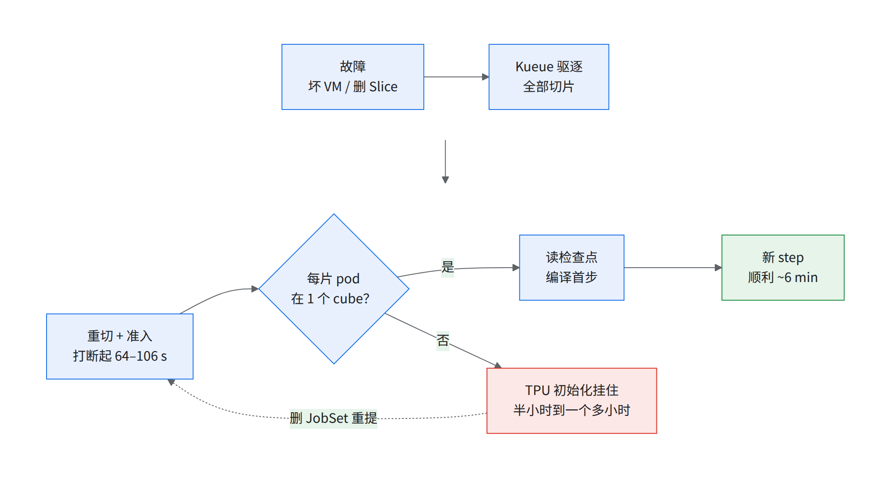
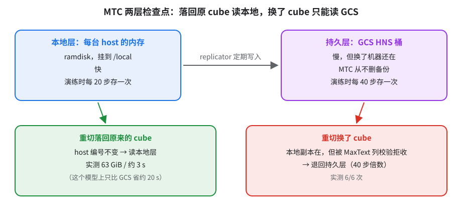
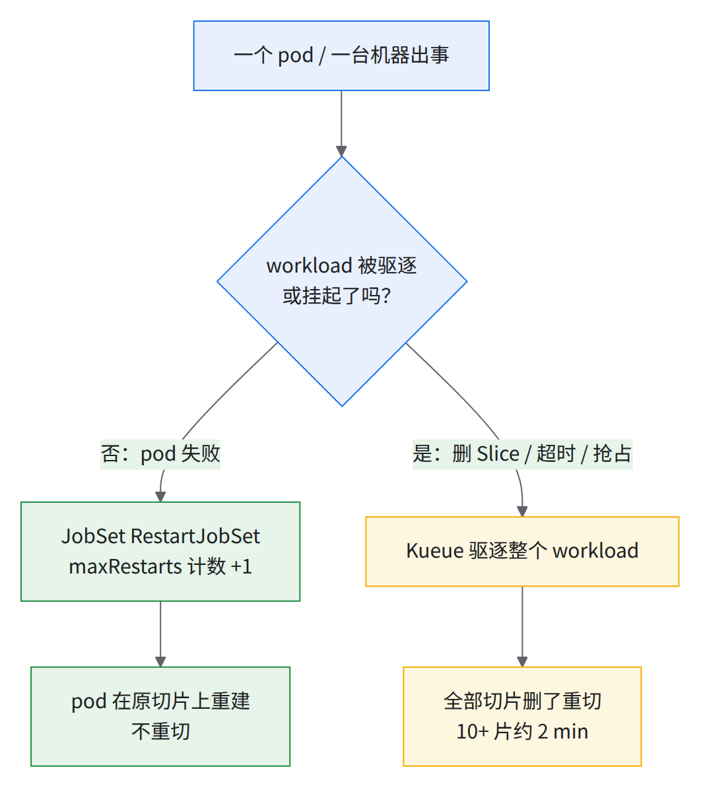
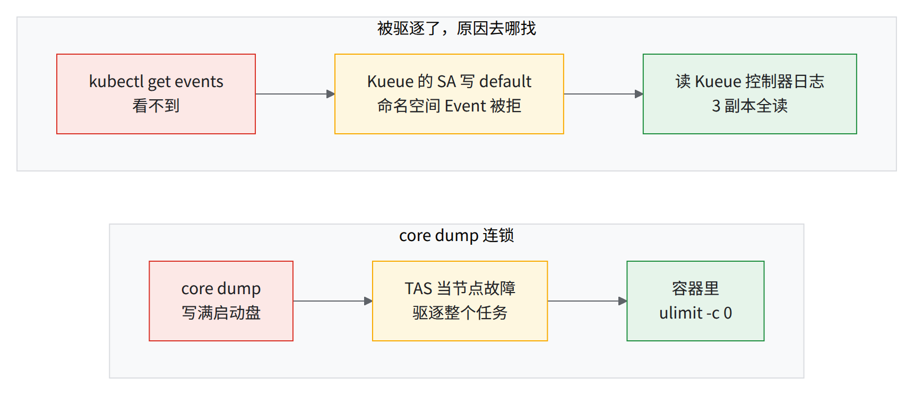
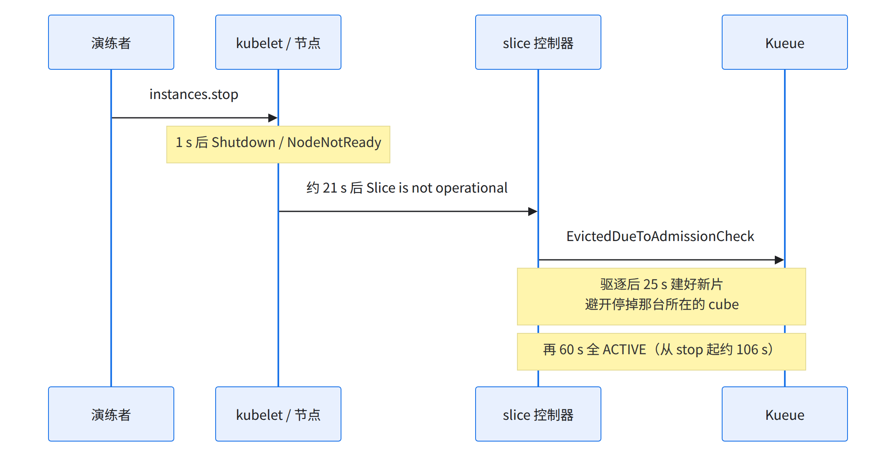
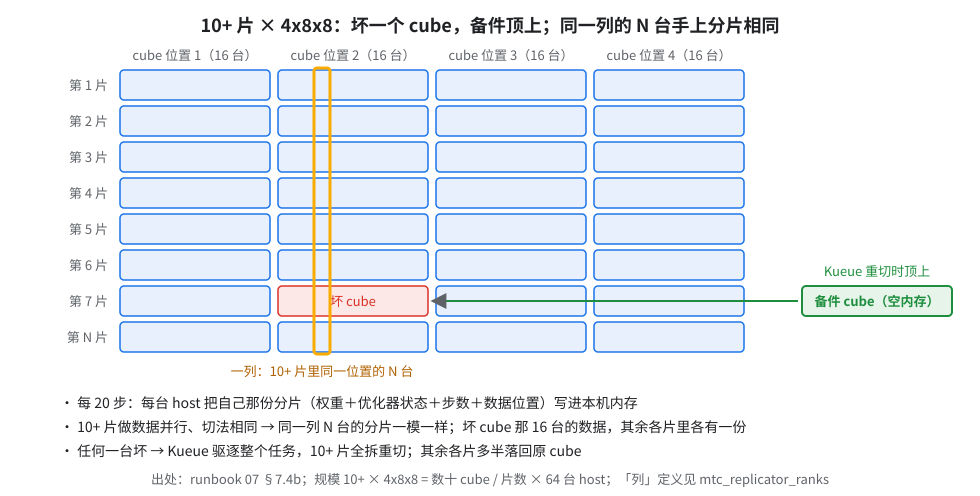
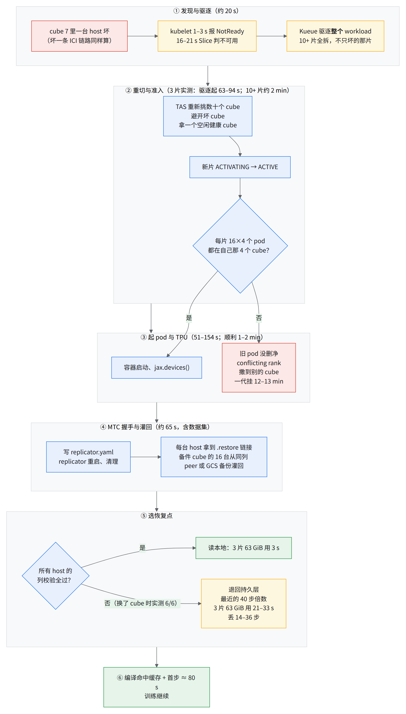
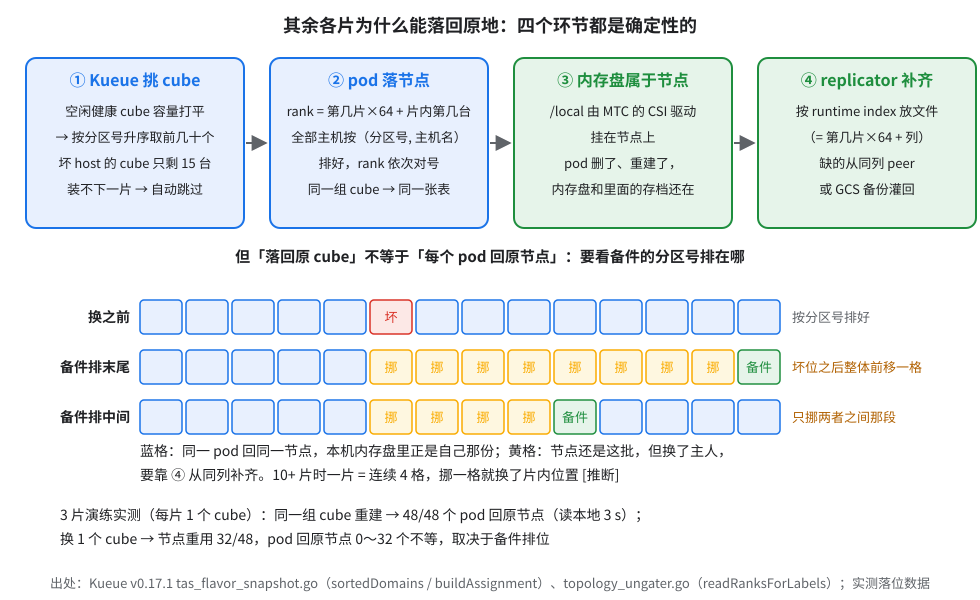
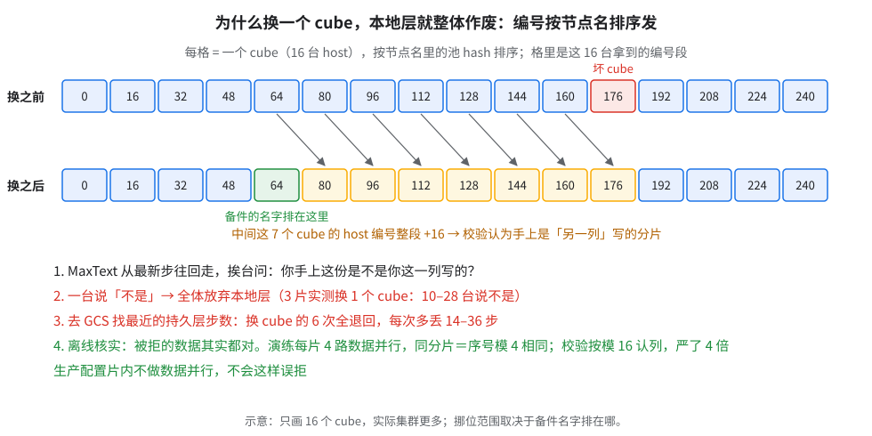
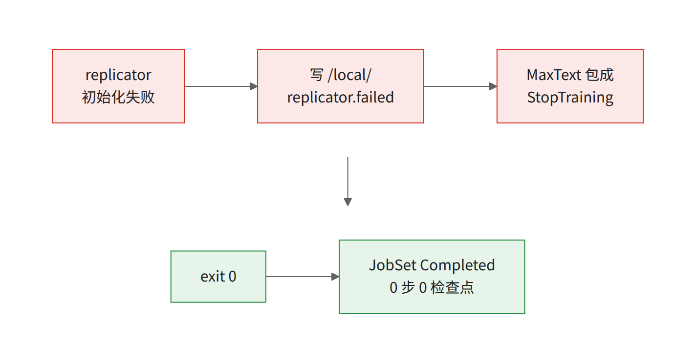

07 韧性：检查点、故障演练、恢复
要解决什么：06 的 JIT 基线作业没开检查点（
ENABLE_CHECKPOINTING为"false"）、maxRestarts: 0，坏一台就从头再来。 为什么难
- multislice 全有或全无：坏一台，全部切片重切（05 §5.2）。
- 最慢的是「TPU 初始化挂住」（多次打断里有几次），根因是一片的 pod 撒到多个 cube（§7.4、经验教训第 42 条）。
演练规模：3 × 4x4x4 = 192 chip（缩小版 MoE 模型），不是 06c 的 10+ × 4x8x8。
- 多次 打断（192 chip 演练）
- 64–106 s 打断 → 重新切片、准入
- ~6 min 顺利时打断 → 新 step
- 半小时到一个多小时 掉进 TPU 初始化挂住时

读图：快慢取决于菱形那一步。
开工前（每个终端一次）：
source ~/runbook-env.sh && rb_env_check PROJECT REGION ZONE CLUSTER MTC_BUCKET
- 变量：
$PROJECT $REGION $ZONE $CLUSTER $NS $STATE_DIR，MTC 的$MTC_CONFIG_NAME $MTC_BUCKET $MTC_INMEM_SIZE（env.sh「K8s 侧」段）。 - 工具与权限：
kubectl（集群管理员）、gcloud、jq、envsubst；container.clusters.update、storage.buckets.create/setIamPolicy、compute.instances.stop/start。 - 已完成：03、05、06。
- 脚本：
| 脚本 | 节 | 做什么 |
|---|---|---|
07-checkpoint-configuration.yaml |
7.1 | CR 模板（envsubst 填变量） |
07-mtc-setup.sh |
7.1 | addon → HNS 桶 → IAM → CR → 验证；--verify、--delete |
07-fault-drill.sh |
7.3 | 注入 pod-kill / slice-delete / vm-stop 并录时间线；--restore-vm |
7.1打开 Multi-Tier Checkpointing（MTC）
MTC 分两层存检查点：

读图：换 cube 时本地副本还在，被 MaxText 列校验拒收（见经验教训第 24 条）。
分六步，用词：
| 词 | 是什么 |
|---|---|
| replicator | 节点上的组件，备份写到 gs://<bucket>/<job-name>/<YYYY-MM-DD_HH-MM>/；初始化失败写 /local/replicator.failed |
| peer NFS | 节点上的 /peers/N 挂载；driver 卸载不掉会堆积、弄坏节点 |
| HNS 桶 | 有真目录的 GCS 桶，MTC 备份必需（第 3 步） |
| goodput | 有效训练时间占比 [推断]；ENABLE_GOODPUT 采集 |
- 集群 addon：
highScaleCheckpointingConfig.enabled: true（实测集群已开）。- 新建：
--addons=HighScaleCheckpointing,GcsFuseCsiDriver+ Workload Identity，仅 Standard。有效下限是 GKE 1.37.0-gke.3165000（第 2 步的 driver ≥0.8.4 当时只有它和 3503000 带）；1.32.4-gke.1415000 只是 addon 自己的门槛，单看它会装上有 bug 的 driver。 - 已有集群补开（zonal，
--location=$ZONE）源https://docs.cloud.google.com/kubernetes-engine/docs/how-to/machine-learning/training/multi-tier-checkpointing「Configure nodes on an existing cluster」：
- 新建：
gcloud container clusters update $CLUSTER --location=$ZONE --project=$PROJECT --workload-pool=$PROJECT.svc.id.goog
gcloud container clusters update $CLUSTER --location=$ZONE --project=$PROJECT \
--update-addons=HighScaleCheckpointing=ENABLED,GcsFuseCsiDriver=ENABLED
gcloud container clusters describe $CLUSTER --location=$ZONE --format='value(addonsConfig.highScaleCheckpointingConfig.enabled,addonsConfig.gcsFuseCsiDriverConfig.enabled)'两个True；kubectl get crd checkpointconfigurations.checkpointing.gke.io有结果。
-
版本：multitier driver ≥0.8.4（0.8.3 不卸载 peer NFS，污染节点）。
- 当时只有 GKE 1.37.0-gke.3165000 / 3503000 带（driver 0.9.0）；有没有回补到 1.36 未核，要问 Google 工程。
- 实测集群实际：
highscalecheckpointing-multitier-driver:v0.9.0-gke.2、replicator:v0.3.1-gke.0。
-
备份桶：HNS（建桶时就得开 源https://cloud.google.com/storage/docs/create-hns-bucket）。
- 授权：给
ns/gke-managed-checkpointing/sa/gke-checkpointing-multitier-node授roles/storage.objectUser。 - 保留：
backup-interval-minutes≥30；MTC 从不删 GCS 备份，自己做保留。
- 授权：给
gcloud storage buckets create gs://$MTC_BUCKET --project=$PROJECT --location=$REGION \
--uniform-bucket-level-access --enable-hierarchical-namespace
PNUM=$(gcloud projects describe $PROJECT --format='value(projectNumber)')
gcloud storage buckets add-iam-policy-binding gs://$MTC_BUCKET --role=roles/storage.objectUser \
--member="principal://iam.googleapis.com/projects/$PNUM/locations/global/workloadIdentityPools/$PROJECT.svc.id.goog/subject/ns/gke-managed-checkpointing/sa/gke-checkpointing-multitier-node"
- 验证：
gcloud storage buckets describe gs://$MTC_BUCKET --format=json | jq .hierarchical_namespace为{"enabled": true}（键名可能是hierarchicalNamespace[需验证]）；get-iam-policy里有那个 principal。 - 幂等：桶已存在的报错可忽略。
- 回滚：
remove-iam-policy-binding同参数；gcloud storage rm -r gs://$MTC_BUCKET会删掉所有备份。
CheckpointConfigurationCR：driver DaemonSet 由它创建；升级前后删了重建。
- schema 取自公开文档（
checkpointing.gke.io/v1、集群级）源https://docs.cloud.google.com/kubernetes-engine/docs/how-to/machine-learning/training/multi-tier-checkpointing。 - MTC 本地层 ramdisk 按 100 Gi 配（DaemonSet 参数
--tmpfs-size-mib=102400）[推断]。 - 模板
scripts/07-checkpoint-configuration.yaml含${…}变量，别直接 apply，用 07-mtc-setup.sh 或envsubst < "$RUNBOOK_DIR"/scripts/07-checkpoint-configuration.yaml | kubectl apply -f -：
apiVersion: checkpointing.gke.io/v1
kind: CheckpointConfiguration
metadata: {name: ${MTC_CONFIG_NAME}}
spec:
cloudStorageBucketName: ${MTC_BUCKET}
nodeSelector: {cloud.google.com/gke-tpu-accelerator: tpu7x} # 公开文档写 node.kubernetes.io/instance-type: tpu7x-standard-4t，选中同一批节点
tolerations: [{key: google.com/tpu, operator: Exists, effect: NoSchedule}]
inMemoryVolumeSize: ${MTC_INMEM_SIZE} # ≈ 本地检查点 × 2.2（第 5 步）
gcsFuseMountOptions: # 8 项，原样照抄公开文档
- implicit-dirs
- metadata-cache:negative-ttl-secs:0
- metadata-cache:ttl-secs:-1
- metadata-cache:stat-cache-max-size-mb:-1
- metadata-cache:type-cache-max-size-mb:-1
- file-system:kernel-list-cache-ttl-secs:0
- read_ahead_kb=1024
- write:enable-streaming-writes:true
建（第 1、3、4 步缺什么补什么；默认 dry-run）：
"$RUNBOOK_DIR"/scripts/07-mtc-setup.sh # 看现状与将执行的命令
"$RUNBOOK_DIR"/scripts/07-mtc-setup.sh --execute # 最后一步 = envsubst < 07-checkpoint-configuration.yaml | kubectl apply -f -
卸载：07-mtc-setup.sh --delete --execute（不删桶、不关 addon）。报 no matches for kind "CheckpointConfiguration" = addon 没开 源公开文档 Troubleshoot。
-
内存：ramdisk 从 960 GB 主机内存扣；
inMemoryVolumeSize≈ 本地检查点 × 2.2（TPU）。缩小版 MoE 模型实测：31.5 GiB per host needed, ramdisk 100.0 GiB。 -
工作负载侧：用
07-jobset-mtc.yaml。未实测，T0（reservation 生效时刻）前的演练须在 2 片上验证。- 底子是
06-jobset.sh生成的 JobSet；只从实测集群第一次演练（§7.4 共三次演练）的 JobSet借了结构（容错 failurePolicy、/local卷、MTC 那组 env），模型参数没抄。 - 不抄的原因：该演练是 3 × 4x4x4 的小模型，GA 2 编译要 101.0 GiB > 94.74 GiB HBM。
- 周期默认照后两次演练：本地 20 步、持久 40 步。周期按步数定、按步数对使用方讲；10+ 片 AOT 生产步时比 JIT 口径（06c §6.6）短约 40%，同样步数的墙钟也短这么多，换算分钟要用生产口径，别用 JIT 口径。
- 生产规模参考（10+ 片 / 更大规模，配置逐项见 07a §7a.3）：本地 save 阻塞（Orbax
Finished blocking save … @ /local/N）10+ 片和更大规模都只有秒级，摊到本地周期里可以忽略；持久层（GCS，数 TiB 级检查点）一次阻塞 save 要几分钟；但同作业其余 GCS save 阻塞只有几秒，口径见 07a §7a.3。该作业持久层整个关了，所有片同时丢时没有回退点 —— 交付时不照抄，持久层周期按故障率定。- 生产规模 MTC 参数参考（10+ 片 / 更大规模）：
- 本地层
LOCAL_CHECKPOINT_PERIOD：按自己的步时折成分钟级存一次。 - GCS 备份
MTC_BACKUP_INTERVAL_STEPS：比本地层稀，取本地周期的整数倍，按自己的步时和能容忍的丢失量调。 - 本地层每 host 要百余 GiB，ramdisk 给到约 2.6 倍（数百 GiB）。
- 本模板默认 20 / 40 步是小规模演练的值，数千芯生产按上面重定；持久层仍建议开。
- 存盘后那几步会变慢（已知问题，上游修复未合入）：持久层每次存盘阻塞几分钟（见经验教训第 23 条）；本地层存盘后第 1、2 步明显变慢。持久层周期按故障率定，别设太密。
MTC_DATA_PARALLELISM和replicas由同一个${SLICES}生成，必须等于片数（演练配置填的 3 是它自己的片数）。- 前提、渲染命令、2 片验证四步都在文件头。最要紧的一条：JIT 基线作业的 MaxText env tar 带不带 MTC 接线未核，不带时 env 被静默忽略。
- dsv3（06b）没有 MTC 模板：本书唯一的 MTC 模板建在 06c 的训练 JobSet 上（要 env tar、代码仓库凭据、数据 PVC）。06b 公开镜像认不认这组 env 未核 [需确认：上游 MaxText 是否读
ENABLE_MTC等 env]。要给 dsv3 开 MTC，把这组 env 和/local卷叠到06a-jobset-dsv3.yaml上，自己在 2 片上验证；这是本书的缺口。
- 底子是
# 节选：07-jobset-mtc.yaml 相对 06-jobset.sh 生成的 JobSet 的增量
failurePolicy: {maxRestarts: 10, restartStrategy: Recreate}
replicas: ${SLICES}
volumes:
- name: mtc-ramdisk
csi: {driver: multitier-checkpoint.csi.storage.gke.io} # 容器挂到 /local
env:
- {name: ENABLE_MTC, value: "true"}
- {name: LOCAL_CHECKPOINT_DIRECTORY, value: /local}
- {name: LOCAL_CHECKPOINT_PERIOD, value: "${LOCAL_CKPT_PERIOD}"} # 默认 20
- {name: CHECKPOINT_PERIOD, value: "${PERSIST_CKPT_PERIOD}"} # 默认 40
- {name: MTC_BACKUP_INTERVAL_STEPS, value: "${PERSIST_CKPT_PERIOD}"}
- {name: MTC_DATA_PARALLELISM, value: "${SLICES}"} # = 片数
- {name: MTC_PERSISTENT_CHECKPOINTING, value: "true"}
- {name: ENABLE_CHECKPOINTING, value: "true"}
- {name: ASYNC_CHECKPOINTING, value: "true"}
- {name: ENABLE_GOODPUT, value: "true"}
标签 managed-mldiagnostics-gke: "true" 开 ML Diagnostics（演练配置里有，模板保留）。
验证：
kubectl get pod -n gke-managed-checkpointing -o wide # 每个 TPU 节点一个 multitier-driver pod（实测集群为 6/6 Ready）+ high-scale-checkpointing-ranks
"$RUNBOOK_DIR"/scripts/07-mtc-setup.sh --verify # 数：匹配 DaemonSet nodeSelector 的节点数 = driver pod 数 = 全部容器 Ready 数
- 按 DS 实际 nodeSelector 数：实测集群 DS 还带
cloud.google.com/gke-networking-dra-driver: "true"，约 95% 的 TPU 节点有，driver pod 数与之相同（选择器是控制器加的 [推断]）。 - 容器数实测集群 6/6。
- 卡
Init:0/1+FailedMount ... 403= 第 3 步 IAM 没绑对 源公开文档 Troubleshoot。 - 训练日志有 local save 行（冒烟测试的实例：
dispatched for step 0 (<秒数>s)）。 - MTC 自己的控制组件也要验（有先例）→ 见经验教训第 62 条：
- rank server 用 v0.10.0-gke.0 及以上（更早的版本在大规模下有已知问题，会拖住作业提交），放规格更高的专用 CPU 节点。
- coordinator 注册碰上一次 apiserver 瞬断就放弃、不通知其余节点，其余节点等满 300 s 才报
no .restore file was found；本书核对时还没有修复。修复前把 Orbax restore 超时调小，并加「rank 0 出现/local/replicator.failed就全体退出」的看门狗 [推断：未实测]。 - MTC 目前只支持 GKE rapid 发布通道，升级纪律见 08 §8.3。
本节可能踩到的问题：exit 0 / JobSet Completed 不等于训练成功 · MegaScale premap buffer 被 checkpoint 吃光 · 节点池没开 Workload Identity · Checkpoint 存储与 MTC 使用坑 · 没有 Local SSD
7.2JobSet / Kueue 的失败策略
| 设置 | 取值 |
|---|---|
backoffLimit |
0（任一 pod 失败即 Job 失败） |
failurePolicy.maxRestarts |
恢复测试 10；一次性基准 0；约 4K pod 规模下 3–5 |
failurePolicy.rules |
RestartJobSet on BackoffLimitExceeded，restartStrategy: Recreate |
Kueue waitForPodsReady |
30m / recovery 10m；pod 掉线超过 recoveryTimeout 就驱逐——坏 cube 靠它 |
--activation-timeout |
60m（先例） |
核对命令（每次恢复测试前；出处 https://kueue.sigs.k8s.io/docs/tasks/manage/setup_wait_for_pods_ready/ 、 https://jobset.sigs.k8s.io/docs/concepts）：
# Kueue：waitForPodsReady 必须是生效的（没被注释掉）——期望 timeout: 30m / recoveryTimeout: 10m
kubectl get cm -n kueue-system kueue-manager-config -o jsonpath='{.data.controller_manager_config\.yaml}' | grep -A3 -E '^\s*#?\s*waitForPodsReady:'
# JobSet：失败策略与 backoffLimit
# JobSet 名：kubectl get jobset -n $NS；默认取 env.sh 的 $JOBSET_NAME
kubectl get jobset $JOBSET_NAME -n $NS -o jsonpath='{.spec.failurePolicy}{"\n"}{.spec.replicatedJobs[*].template.spec.backoffLimit}{"\n"}'
# 期望：{"maxRestarts":10,"restartStrategy":"Recreate","rules":[{"action":"RestartJobSet",...,"onJobFailureReasons":["BackoffLimitExceeded"]}]} 和 0
kubectl get jobset $JOBSET_NAME -n $NS -o jsonpath='{.status.restarts}' # 已用掉的重启次数，到 maxRestarts 就终态失败
⚠️waitForPodsReady 可能是注释掉的
- 实测集群的
kueue-manager-config里整段waitForPodsReady是注释掉的（#waitForPodsReady:/# timeout: 5m/# recoveryTimeout: 3m）。- 以
#开头即没生效，按 03 §3.2 改好重启 → 见经验教训第 34 条。
- 改
failurePolicy= 删了重提；waitForPodsReady集群级，改完kubectl rollout restart deployment -n kueue-system kueue-controller-manager，影响集群上所有作业。

读图：被驱逐时 Kueue 重切全部切片；RestartJobSet 不重切（05 §5.2 修正）。
| 情况 | 要点 |
|---|---|
| GKE 切片控制器不自愈 FAILED 切片 | 靠 Kueue 删了重建 → 见经验教训第 39 条 |
驱逐原因 kubectl get events 看不到 |
Evicted… 后跟 events is forbidden |
| 交付前核 RBAC | kubectl auth can-i create events -n $NS --as=system:serviceaccount:kueue-system:kueue-controller-manager 应为 yes |
TAS 把 DiskPressure 当节点故障（EvictedDueToNodeFailures） |
→ 见经验教训第 42 条 |
| 恢复路径已知 bug | 要 kueue-slice-controller ≥v0.8.0-203 + kueue-tpu-ac 新版本（以 Google 确认为准）才修复。本章演练用的是 v0.8.0-200，不含这两项修复；交付前须升级并重跑本章恢复演练（待办），版本结论见 09 D10。本章所有 MTTR / 各段耗时都是在早期版本上测的，升级后须复测 |
| 重启后「一个切片特别慢」 | 只能重建 JobSet |

读图：红框症状，绿框做法。
- 控制器日志：
kubectl logs -n kueue-system -l app.kubernetes.io/name=kueue --prefix --tail=-1 | grep -E 'Evicted|conflicting rank'（kubectl logs deploy/<名字>只读 3 个副本中的一个，未必是 leader，所以按标签全读）。
各层超时：按触发先后排
一次故障要等负责它的那一层超时到了才暴露。各层超时互相不知道对方，没有谁短谁长的约定。下表是先例集群（一整个 TPU pod）上实测或工单里查到的值，按触发先后排（「无」排最后）：
| # | 超时 | 值（先例） | 哪层 | 到点后发生什么 | 建议 | 出处 |
|---|---|---|---|---|---|---|
| 1 | Kueue TAS 对节点 DiskPressure 的宽限 | 0 s | 调度 | 立即驱逐；4x8x8 占满整个 cube，没有节点可换，只能整片重来 | 先防 core dump 写满盘（见经验教训第 42 条） | |
| 2 | MegaScale 跨片 hang 检测 | 5 min | 多片同步 | 终止作业，整体重启 | — | |
| 3 | jax shutdown barrier ／ Orbax restore | 300 s ／ 300 s，两者赛跑 | 恢复 | 一个 coordinator 断连，其余 peer 白等 300 s | 🚧 Google 未给建议值 | |
| 4 | Orbax 里的 jax 初始化（写死，不看 MaxText 设置） | 900 s | 存档 | — | 只能改代码 | |
| 5 | Orbax 存档 timeout_secs |
1,200 s | 存档 | 存档报超时 | — | |
| 6 | jax_distributed_initialization_timeout |
1,800 s | 初始化 | 一次坏的重新准入要约 30 min 才暴露 | Google 建议 300–600 s | ；经验教训第 44 条 |
| 7 | megascale_topology_discovery_timeout |
4,000 s（约 67 min） | 初始化 | 拓扑对不上（INVALID_ARGUMENT）也每 10 s 重试，直到超时 |
调小前先和 Google 确认 | ；经验教训第 44 条 |
| 8 | TensorStore 单请求 deadline | 无 | 存档 | 一个挂住的请求只能等外层超时 | — |
读法：
- 最外层（第 7 行）最慢，最内层（第 8 行）没有超时。先例里靠人工 suspend 才没等满 4,000 s。
- 自己能补的一层是驱动看门狗：全部 pod Running 后 N 秒内没人打出
jax.devices() returned就删 JobSet、收证据（06c §6.10 第 8 条）。 - 版本一换，值就可能变。使用方的表按交付 BOM 的版本重新核一遍 [推断]。
本节可能踩到的问题：一个 Slice 出事，N 片全部重切 · 驱逐后重建时旧 pod 未删净 → Kueue TAS rank 冲突 · 控制面容量 · 训练挂住不报错 · 可观测性盲区
7.3故障演练
要证明的：停一台 VM → JobSet 重启 → Kueue 避开那台重切。 步骤：
- 起带 MTC 的多片任务，跑过至少一次本地检查点。
- 注入故障。实测时用过（§7.4）：手删 Slice 2 次、
instances.stop1 次、instances.delete3 次、simulateMaintenanceEvent1 次；没有把杀 pod 当注入（删挂住的 worker-0-0 是救火，见下「杀一个 worker pod」）。
gcloud compute instances stop <节点名> --zone=$ZONE，实测（3 片演练）：

- 读图：全程不用人动，坏切片被自动换成新切片；
instances.delete与simulateMaintenanceEvent同样约 16–20 s 发现。 - 上一代 TPU 上：所在 Slice →
FAILED（"Partition is in failed state"）、JobBackoffLimitExceeded，不重叠的不受影响；节点恢复后仍 FAILED、要删了重建。 - 恢复：
gcloud compute instances start <节点名> --zone=$ZONE，不回来gcloud compute instance-groups managed recreate-instances <MIG> --instances=<节点名> --zone=$ZONE（别用abandon-instances）。 autoRepair: true可能先一步修这台 VM。
gcloud compute instances simulate-maintenance-event对 tpu7x 可用（演练实测）。- GKE 文档的「手动开始维护」走 GKE 流程（taint、驱逐、再请求 GCE） 源https://docs.cloud.google.com/kubernetes-engine/docs/concepts/handle-disruption-gpu-tpu。
- 实测：
Slice has been deleted, evicting workload→ 全部重建（两次演练，都掉进经验教训第 42 条）。 - 另一轮在 2 × 4x4x4（无 MTC）上复测：+2 s 整个 JobSet 挂起、+24 s 两片在原 cube 同名重建、+60 s 重新准入、+67 s 32 个 pod 全 Running，JobSet
restarts仍是 0 → 见经验教训第 38 条。
backoffLimit: 0下 →RestartJobSetFailurePolicyAction；实测集群唯一一次是删挂住的 worker-0-0。
| 故障 | 谁先反应 | 切片会不会重切 | 从哪层恢复 |
|---|---|---|---|
| 杀一个 worker pod | JobSet：BackoffLimitExceeded → RestartJobSet（39 s） |
不重切 | 原地重启 → 本地层。生产作业上 10+ 片十多次注入（exec 杀训练进程和删 pod）全部原地恢复、都从本地层读回（恢复点都落在本地存档的步数上）；演练中跨 cube 挂住的条件不同，见表下 |
| 删一个 Slice | slice 控制器约 1 s → Kueue 驱逐 | 全部重切，从删除起 60–80 s 准入（两次演练 64–80 s，无 MTC 复测 60 s） | 第一次落回原 cube → 本地 step 60；第二次换了 cube → GCS step 40（§7.4） |
| 停 / 删一台 VM、模拟维护 | 16–21 s 后 → Kueue 驱逐 | 全部重切避开坏 cube，从注入起 90–106 s 全 ACTIVE、pod 建好（5 次） | 换 cube → GCS，丢 14–36 步；顺利约 6 min 出新 step |
演练中「杀 pod 跨 cube 挂住」的条件不同（3 × 4x4x4，缩小版 MoE 模型，JIT）：
- 唯一一次删 pod 是删
worker-0-0救火：那一代在删 Slice 后已跨 cube 挂住（47 个旧 pod 没删净，84 次conflicting rank）。 - 后两代建 pod 时仍有 32 / 17 个旧 pod 活着，replica 跨 3 / 3 / 2 个 cube，照样挂住，最后手删 JobSet 才清掉。
- 该次演练的条件：core dump 开着（旧 pod 2–6 min 才删净）、Kueue v0.17、没打 device-id 补丁；「RestartJobSet 也会跨 cube」是推断（演练时没开 Kueue 的详细日志，看不到分配过程）。
- 生产作业上那批注入是 10+ × 4x8x8、AOT、有补丁，注入打在健康的一代上；core dump、落在哪些 cube、旧 pod 删没删净、Kueue 版本未核。所以只能说「健康一代上杀 pod 能原地恢复」，不能说「跨 cube 挂住已解决」。
脚本注入（默认 dry-run，打印目标：worker-1 的 pod / 其节点 / 排第一的 Slice）：
# JobSet 名默认 $JOBSET_NAME（换别的任务：kubectl get jobset -n $NS 列出来）
"$RUNBOOK_DIR"/scripts/07-fault-drill.sh --jobset $JOBSET_NAME --mode pod-kill # 或 slice-delete / vm-stop
"$RUNBOOK_DIR"/scripts/07-fault-drill.sh --jobset $JOBSET_NAME --mode vm-stop --execute --minutes 45
# <节点名> = 上一条输出里「节点=…」那一项；vm-stop 注入后脚本会直接打印整条「恢复：… --restore-vm <节点> --execute」，照抄即可
"$RUNBOOK_DIR"/scripts/07-fault-drill.sh --restore-vm <节点名> --execute # 只 vm-stop 需要；另两种由 JobSet/Kueue 自己恢复
- 只发一条：
kubectl delete pod <pod>/kubectl delete slice <slice>/gcloud compute instances stop <node> --zone=$ZONE --async。 - 后台 5 个
kubectl get -w --output-watch-events（workloads、slices、jobset、pods、events）带 UTC 时间戳写到$STATE_DIR/drill-<jobset>-<mode>-<时间>/。 - 不幂等：每跑一次注入一次，没恢复完别重跑。
- 记录各段时刻：
- 故障
inject.log→ Evictedworkloads.log（EVICTED 列、ADMITTED False→True）→ 新 Slice ACTIVEslices.log； - 第一条 restore 日志
kubectl logs <新 worker-0-0> -c jax-tpu | grep -m1 -E "Found a restore directory|Restoring checkpoint"→ 第一个新 step... | grep -m1 "completed step:"。
- 故障
✅多记一项核对每个 replica 的 16 个 pod 在同一个
gke-tpu-partition-4x4x4-id（经验教训第 42 条，判据 §7.4）。
- 离线重建：
gcloud logging read取日志，按小时分窗（长流会静默截断）。 - 按本节的日志行手工记各段时刻即可。
- 恢复验证：
kubectl get jobset <name> -n $NS -o jsonpath='{.status.restarts}'+1（或 Workload 重新 Admitted）；kubectl get slices.accelerator.gke.io全部 ACTIVE。 - vm-stop 后：节点 Ready 且
gke-tpu-partition-4x4x4-state为 HEALTHY（再核 §7.5 标签）。
- 验证恢复点：看
[MTC] restoring step N from the local tier还是from the persistent tier。
- 落回原 cube：N = 最后一个本地检查点；换 cube：N = 最后一个
CHECKPOINT_PERIOD倍数。 Found a restore directory at step M只说明灌回了 M，不代表用了，见经验教训第 24 条。
- 演练期间告警去重：杀训练进程后几秒内，同片另一台 host 的 libtpu 常报
SLICE_FAILURE_CHIP_DRIVER_ERROR，看上去像芯片驱动故障（10+ 片多次杀进程，绝大多数都出现，07a §7a.2）。- 演练前把注入窗口告诉值班；告警按 exec / 删 pod 审计的时间去重，窗口内的这类报错不送修。
- 硬件告警的判据不能只看这一行。
- 恢复时间按片数分档测，分两档（逐段依据见 07a §7a.5）：
- 建议目标：10+ 片原地重启 ≤ 15 min（故障到恢复后第一步）。实测原地重启约 10–14 min，中位约 11 min。
- 优化目标 ≤ 8 min [推断]：数据集加载并行（
BUILD_WORKERS=8）、关 core dump（ulimit -c 0）、AOT 载入提速，三件都做到才够。 - 更大规模不设线：只有 1 次，约 22 min（中途又失败一次）。这 22 min 里至少约 5 min 是 MTC coordinator 注册失败、其余节点等满 300 s，外加一次额外重启，不全是规模效应（见经验教训第 62 条）。交付片数要单独演练，别拿小规模外推。
- 演练再加两项：注册窗口断一次 apiserver 连接（或杀 rank 0 的 replicator），看全体是否快速退出重来；按交付规模起 pod，看 rank 分配耗时和集群提交是否受影响。
jax_distributed_initialization_timeout别用 1800 s（一次坏的重新准入要 30 min 才暴露），设 300–600 s → 见经验教训第 44 条。- 实测丢掉的步数超过一个本地周期（已知例外，07a §7a.3）；估丢步时在本地周期之上再留余量。
- 自动重建不总是全换，「只换坏片」没坐实、判据未核（07a §7a.4）；恢复时间按全部重切估上限。
本节可能踩到的问题：Kueue waitForPodsReady 被关掉，作业无法从 cube 故障中恢复 · 切片激活慢或超时 · JAX abort 写几十 GB core dump → 节点 DiskPressure · Checkpoint 存储与 MTC 使用坑 · START_SESSION failed / barrier
7.4实测：各类故障的恢复耗时
演练规模：3 × 4x4x4 = 192 芯片（小模型）；本地层每 20 步、持久层每 40 步存一次；maxRestarts: 10、backoffLimit: 0。共打断多次，结论如下。
| 故障类型 | 发现 → 驱逐 | 驱逐 → 新片全 ACTIVE、pod 建好 | 打断 → 第一个新 step |
|---|---|---|---|
删 VM（instances.delete） |
约 17–20 s | 74–75 s | 约 6 min；撞上 TPU 初始化挂住的一次 66 min 仍未恢复 |
模拟维护事件（simulateMaintenanceEvent） |
约 16 s | 75 s | 约 6 min |
停 VM（instances.stop） |
约 21 s | 85 s | 约 39 min（撞上 TPU 初始化挂住） |
| 手动删 Slice | 约 1 s | 63–79 s | 30 min 以上：一次约 38 min，另一次约 30 min 读回检查点后仍没出 step（两次都撞上 TPU 初始化挂住） |
| 节点 DiskPressure（abort 写 core dump 写满盘） | 0 s | 94 s | —（意外触发，经验教训第 42 条） |
- 重切本身快而稳：激活 45–70 s；从打断起到全 ACTIVE、pod 建好 64–106 s；硬件类故障每次都自动换到健康 cube。
- 顺利时约 6 min，五段依次：控制面约 90 s、建 pod 到 TPU 可用 1–2 min、MTC 握手加数据集约 68 s、读检查点约 30 s（63 GiB，GCS）、编译命中缓存加首步约 80 s。
- 不顺时 半小时到一个多小时：上一代 pod 没删净（还在写 core dump）就放新 pod → rank 冲突 → 一片的 pod 撒到多个 cube → TPU 初始化挂住，一代 12–13 min，可能连挂几代（见经验教训第 42 条）。
- 读检查点：本地层 3 s，持久层（GCS）21–33 s。换了 cube 时本地层会被拒收，退回持久层，丢 14–36 步（经验教训第 24 条，见 §7.4b）。
使用方要做的两件事：
- 模板里写
ulimit -c 0：不写 core dump，旧 pod 能很快删净，切断「core dump → 驱逐 → rank 冲突 → 再挂住」这条循环。 - 每次准入后按 replica 数 cube 个数（节点名
gke-tpu-<池 hash>-xxxx的池 hash 即 cube），> 1 就删 JobSet 重提。现成命令：08 §8.6-C 第 1 步那段循环（按 partition-id 去重）。
日志怎么读：
| 看到 | 说明 | 去哪看 |
|---|---|---|
EvictedDueToAdmissionCheck / EvictedDueToNodeFailures |
Kueue 驱逐及原因 | Kueue 控制器日志（§7.2） |
Slice has been deleted, evicting workload / Slice is not operational |
slice 控制器发现坏片 | kubectl logs -n slice-controller-system |
SlicesCreated → AdmissionCheckUpdated … "Pending" to "Ready" |
新片建好 → 全 ACTIVE | kubectl get events |
conflicting rank |
马上跨 cube 挂住 | Kueue 控制器日志 → 经验教训第 42 条 |
TPU backend initialization is taking more than 60.0 seconds |
TPU 初始化慢/挂 | 容器日志 |
[MTC] restoring step N from the local/persistent tier |
恢复点与来源 | 容器日志 → 经验教训第 24 条 |
本节可能踩到的问题：MegaScale premap buffer 被 checkpoint 吃光 · 可观测性盲区
7.4b 走一遍：10+ 片 × 256 芯里坏一个 cube，备件 cube 顶上
结论先看
- 上游 MaxText 换 cube（硬件坏、维护）时本地层用不上，恢复点（RPO）＝
checkpoint_period，不是本地层的 20 步。带上 device id 配对补丁后，10+ 片二十多次恢复（其中原地重启十几次，其余为驱逐重建、换片 / 人工重建，见 07a）全读本地层（07a §7a.3）；这是绕过办法，上游未合入；在你使用的代码版本上演练通过前，按持久层周期定 RPO 和演练预期。- 现在就能做、不改代码的三件事见 P0：容器里
ulimit -c 0、准入后核 cube、按持久层周期定 RPO。- 让换 cube 也能读本地层，要改 MaxText / Orbax 的恢复逻辑，属于上游改动。
把 §7.3、§7.4 的实测串成一个交付场景。规模：10+ 片 × 4x8x8 = 数千芯、数十个 cube、片数 × 64 台 host；一片 = 4 个 cube = 64 台 host。 各段耗时取自 3 片演练，放到 10+ 片是推断，标在表里。

稳态时 MTC 在做什么
- 本地层：每 20 步，每台 host 把自己那份分片（权重 + 优化器状态 + 步数 + 数据迭代器状态）写进
/local（ramdisk）。 - 列：多片训练按片做数据并行，10+ 片各存一整份同样切分的状态。片内同一位置的 N 台（N = 片数） host 手上的分片一模一样，这 N 台叫一列。
- 这要求片内不再做数据并行。生产任务正是如此（
ici_fsdp_parallelism: 512、ici_data_parallelism: 1），一列就是片内同位置的 N 台。- 3 片演练的配置不一样：片内还有 4 路数据并行（
ici_data_parallelism: 4、ici_fsdp_parallelism: 32），一份完整副本只占 4 台。真正同分片的是 runtime index 模 4 相同的 12 台，不是模 16。
- 3 片演练的配置不一样：片内还有 4 路数据并行（
- 这要求片内不再做数据并行。生产任务正是如此（
- replicator：每台 host 上的 MTC 组件，把本地存档复制给 peer（
/peers/N），并按MTC_BACKUP_INTERVAL_STEPS备份到 GCS（非标准格式）源公开 MTC 文档「Replicator」。 - 持久层：MaxText 自己每
checkpoint_period（演练 40 步）往 GCS 写一份标准 Orbax 检查点。

读图：顺利时打断到新 step 约 6 min；红框那条岔路是 半小时到一个多小时 的来源；黄框那条岔路是「换 cube 时本地层用不上」。
| 段 | 3 片实测 | 10+ 片怎么看 |
|---|---|---|
| ① 发现 → 驱逐 | 停/删 VM、模拟维护约 16–21 s | 同 [推断：发现只看坏的那片] |
| ② 驱逐 → 全 ACTIVE、pod 建好 | 63–94 s（从打断起 64–106 s） | 10+ 片手删 Slice 实测约 2 min 恢复；激活是逐片并行的 [推断] |
| ③ 建 pod → TPU OK | 51–154 s（顺利的三次 58–101 s） | 这么多台里任何一台旧 pod 没删净都会触发 rank 冲突，片越多越要先核 cube 数 [推断] |
| ④ MTC 握手 + 数据集 | 63–70 s | 同量级 [推断] |
| ⑤ 读检查点 | 本地约 3 s / GCS 21–33 s（63 GiB） | 单台 host 读的量取决于模型；但 10+ 片各读一份，桶上总读量 ×片数，看桶带宽，或开 enable_single_replica_ckpt_restoring [推断] |
| ⑥ 编译 + 首步 | 77–81 s（命中 jax_cache_dir） |
编译缓存按拓扑分；10+ 片形状要先跑过一次才命中 [推断] |
其余各片为什么能落回原地

「落回原地、存档还在」不是哪个组件特意保证的，是四个环节各自确定性、串起来的副作用：
- Kueue 挑 cube：每次都挑当时空闲健康 cube 里分区号最小的。坏 host 所在的 cube 只剩 15 台，装不下一组 16，整个跳过。空闲池没变，选出来的还是那批，坏的那个由下一个分区号顶上。空闲池变了（别的 cube 刚空出来）就不一定。
- pod 落到哪台节点：按 rank 对号入座。cube 集合和顺序没变，每个 pod 就回到同一台节点。旧 pod 没删净时会 rank 冲突，Kueue 改贪心乱塞，对号全错，还会跨 cube（见经验教训第 42 条）。
- 存档为什么还在：
/local挂的是 MTC CSI 驱动管理的节点内存盘，不是 pod 的emptyDir。pod 删了重建，节点上的存档原样留着。 - 缺的谁来补：replicator 按 runtime index 给每台 host 准备「自己那份」，本机有就用本机，没有就从同列 peer 或 GCS 备份灌回。3 片演练换 cube 的 6 次恢复，48/48 台都拿到了
.restore目录，数据层面每次都是完整的。
- 但「落回原 cube」≠「每个 pod 回原节点」：备件的分区号插在哪，决定后面多少片换主人。换了主人的 host 由 replicator 从同列补齐，数据仍然完整；真正挡住读本地的是编号校验（下一小节）。
- 两套编号别混：runtime process index（JAX 运行时发，落回原 cube 不变）和 distributed id（GKE MTC 组件写进
/local/jax-init-info.txt，按节点名排，节点集合一变就重排）。
为什么备件 cube 一进来，本地层就用不上

- 坏的那片换进一个备件 cube，其余各片多半落回原 cube，数据也由 replicator 补齐了（上一小节）。
- rank server 按节点名发编号；新 cube 的节点名不同，排序一变，不只是那 16 台，排在它后面的 host 编号都会挪（3 片换 1 个 cube 时 10–28 台被拒收）。
- MaxText 从最新步往回走，问「所有 host 的本地层都能用吗」；一台说「我手上是另一列写的」就全体放弃本地层，去 GCS 找最近的持久层步数。
- 所以换 cube 时的恢复点（RPO）=
checkpoint_period，不是本地层的 20 步。演练时把「落回原 cube」和「换 cube」分开量。
- 演练配置片内还有数据并行，第 3 步的拒收里有一部分是校验把列算严了，数据本身没错。生产配置片内不做数据并行，这道校验的列算法本身是对的；换 cube 时本地层能不能用，要在 10+ 片上演练确认。
- 换 cube 也能读本地层需要上游改动；在你使用的代码版本上演练通过前，交付按持久层周期估丢步。
- 「回到原节点」不是能指望的前提：停机、删机、维护时 Kueue 一定会避开坏 cube（§7.3 表）。
这样不行：本地层恰好在最常见的故障里失效
- 硬件坏 → Kueue 一定换 cube（§7.3 表）→ 本地层用不上。本地层只在「软件崩、原地重启」时生效，而那正是它最不需要的场景。
- MTC 要换来的两样东西都落空：读回快（3 片 3 s 对 21–33 s），和恢复点密（20 步对 40 步）。
怎么修
数据本来就在同列的其余各片里。让换 cube 也能读本地层，要改 MaxText / Orbax 的恢复配对逻辑（按分片认领，或找一片本地完整的读本地、再广播给其余片），属于上游改动，使用方不用自己改代码。修好前按下面 P0 做，RPO 按持久层周期定。
落地方案：恢复要快，也不能多丢 step
全部 [待验证]。
目标拆成两半：
- 少丢 step：换 cube 时也读本地层，丢的步数 ≤ 本地层周期（现在 20 步），而不是退回持久层多丢 14–36 步。
- 少花时间：去掉 rank 冲突那 12–13 min 一代的挂起，让「坏一个 cube」稳定在 6 min 左右（3 片实测，顺利时的口径）。
| 做什么 | 怎么做 | 换来什么 | 待验证 |
|---|---|---|---|
| 按持久层周期定 RPO | 换 cube 时恢复点 = checkpoint_period；按能接受的损失选周期，周期按步数讲（演练用 40 步） |
演练预期对得上，不把正常行为当 MTC 故障 | 周期缩短的代价：3 片演练折算，两层都存时的开销约一成到一成半 [推断]；周期再缩短开销更大，交付规模要实测 [待验证] |
| 剪掉 rank 冲突 | 容器里 ulimit -c 0（或 core_pattern 不落盘）；terminationGracePeriodSeconds 保持现在的 30 |
旧 pod 走 SIGTERM 路径约 37 s 删净，不再走 core dump 的 2–6 min，新 pod 放行时不撞号 | 关 core dump 后是否还有 conflicting rank [待验证] |
| 分配后核 cube | 准入后立刻查「每片的 pod 是否落在 4 个整 cube、每 16 个同一个 gke-tpu-partition-4x4x4-id」，不是就删 JobSet 重提 |
一代挂 12–13 min 变成 1 min 内发现 | 手工命令用 08 §8.6-C 第 1 步的循环；写成 watch 探针、误报率 [待验证] |
| 预热 10+ 片编译缓存 | 交付前用 10+ × 4x8x8 形状跑一次，jax_cache_dir 落到持久卷 |
恢复时编译 + 首步约 80 s，而不是重新编译 | 缓存键在换 cube 后是否仍命中（拓扑形状不变、设备 id 变）[待验证] |
| 持久层只读一份 | 开 enable_single_replica_ckpt_restoring：一片读 GCS，再广播给其余片 |
桶上读量从读量 ×片数降到 ×1，退回持久层时不被桶带宽卡住 | 10+ 片广播耗时 [待验证]；与 MTC 路径能否同时开 [待验证] |
验收演练
按 §7.3 的脚本和判据做。先用 07-jobset-mtc.yaml 在 2 片上过一遍它文件头的验证四步。
| 编号 | 做什么 | 预期 |
|---|---|---|
| D1 | 原地：杀训练进程，不换 cube | restoring step N from the local tier，丢 ≤ 本地周期 |
| D2 | 换 1 个 cube | 上游修好前：退回持久层，丢 ≤ 持久层周期；修好后：读本地层，丢 ≤ 本地周期 |
| D3 | 连续换 cube 3 次（含备件排在中间、排在末尾两种） | 每次都符合 D2 的预期；无 conflicting rank |
| D4 | 10+ 片规模重复 D2 | 端到端耗时对照 §7.3 第 6 步的两档；记录各段耗时 |
7.5备件 cube 与维修现实
- 有备件机制：交付时留出备件 cube，坏了的 cube 由备件顶上（§7.4b）。
- 维修由 Google 负责：坏主机进入 REPAIRING，从数小时到数天不等，使用方不用处理硬件。一条坏 ICI 链路 = 一台坏 host，整个 cube 不可用。
- 使用方要做的：
- 最大任务 ≤128 cube；Σ 配额 ≤ min(128, 健康 cube − 备件 S) × 64，每天重算（03 §3.5）。
- 每天统计：健康 cube 数、15/16 的 cube 数（领先指标）、REPAIRING >12 h 的 VM。
- VM 反复坏：02 §2.5
recreate-instances重建一次；同一宿主机再坏，带证据联系 Google（08 §8.5）。 - 替换节点回来后核对标签（
gke-tpu-partition-*、gke-tpu-slice、gke-tpu-topology）→ 见经验教训第 50 条。
⛔红线
- 别让自动化删/重建「不健康」节点或节点池（打断切片、丢主机映射）。
本节可能踩到的问题：单台坏宿主机 · 电力事件与 protection tier 错配 · 节点注册不上 / GKE 节点与 GCE VM 脑裂 · 使用方自动化删节点 / 自动修复无退避
7.6「exit 0」不等于训练成功
⚠️要数 step，不看状态
Completed只说明退出码是 0；只能数completed step:行数（06c §6.5）。
三种「成功退出但没训练」：
- MTC replicator 初始化失败（下图）。
- 基准测试 exit 0 但结果只在 GCS，stdout 无数字。
- SIGTERM 也是 exit 0：送到训练进程时 MaxText 以 0 退出，JobSet 判
Completed后不再重启；而且抢占时默认不存盘（显式存盘策略替换掉了抢占触发的保存）。修法：致命错误改非零退出码（可以改成 exit 3）＋podFailurePolicy配RestartJobSetAndIgnoreMaxRestarts；补回抢占存盘；terminationGracePeriodSeconds30 → 90 → 见经验教训第 44 条。

每次任务结束核对 [推断]：
# worker-0-0 = replica 0 的 0 号 pod（选择器同 06-jobset.sh 的 w00）；JobSet 名默认 $JOBSET_NAME
W00=$(kubectl -n $NS get pods -l jobset.sigs.k8s.io/jobset-name=$JOBSET_NAME,jobset.sigs.k8s.io/job-index=0,batch.kubernetes.io/job-completion-index=0 -o jsonpath='{.items[0].metadata.name}')
kubectl -n $NS logs $W00 -c jax-tpu | grep -c "completed step:" # 期望 = STEPS
kubectl -n $NS logs $W00 -c jax-tpu | grep -E "replicator.failed|StopTraining|Traceback" | head
# JIT 基线作业这类用 06-jobset.sh 提交的任务，直接 `"$RUNBOOK_DIR"/scripts/06-jobset.sh verify` 做同样的核对
[需验证：grep 关键字取自日志实际格式 completed step: N 与已有经验的错误文本]
告警：step 数 < 期望，或出现 /local/replicator.failed → 见经验教训第 44 条。
检查点
做完了（本章出口）
- MTC 打开并验证：每个 TPU 节点一个 multitier-driver pod，训练日志出现 local save 行（§7.1）
- JobSet / Kueue 失败策略按 §7.2 配好（恢复测试
maxRestarts用 10，waitForPodsReady30m / recovery 10m） - 至少一次故障演练，记下各段时刻（§7.3），对照 §7.3 第 6 步的两档。前提：
07-jobset-mtc.yaml已在 2 片上验证 - 演练中核对每个 replica 的 pod 都在同一个 4x4x4 分区（经验教训第 42 条，命令用 08 §8.6-C 第 1 步）；容器里已
ulimit -c 0（见经验教训第 42 条） - 恢复点核对：
[MTC] restoring step N from the local/persistent tier，N 符合 §7.3 第 4 步预期 - 备件与每日统计按 §7.5 建好：健康 cube 数、15/16 的 cube 数、REPAIRING 超过 12 h 的 VM
- 每次任务结束核对
completed step:计数 = STEPS，并对/local/replicator.failed告警（§7.6）
说得出（先自己答，再点开对答案）
为什么坏一台要全部重切？
多切片全有或全无：workload 被驱逐 = 全部切片重切，TAS 不能只换坏片；JobSet 重启不重切MTC 两层各存在哪？
本地层在每台 host 内存的 ramdisk/local，持久层在 GCS HNS 桶恢复最慢的是哪一段？
不是切片（64–106 s），是 TPU 初始化挂住：旧 pod 没删净就放新 pod，rank 冲突，一片撒到多个 cube，一代挂 12–13 min为什么同一次演练第一次读回 step 60、第二次只读回 step 40？
第一次落回原 cube，本地层可用；第二次三个 cube 全换，36/48 台本地副本被列校验拒收，退回持久层JobSet
Completed能当成功吗？不能，要数 step 数
交棒：交出能自动重切、从检查点恢复的任务和恢复耗时基线；下一章讲长期运维——监控、维护、升级、找谁 → 08